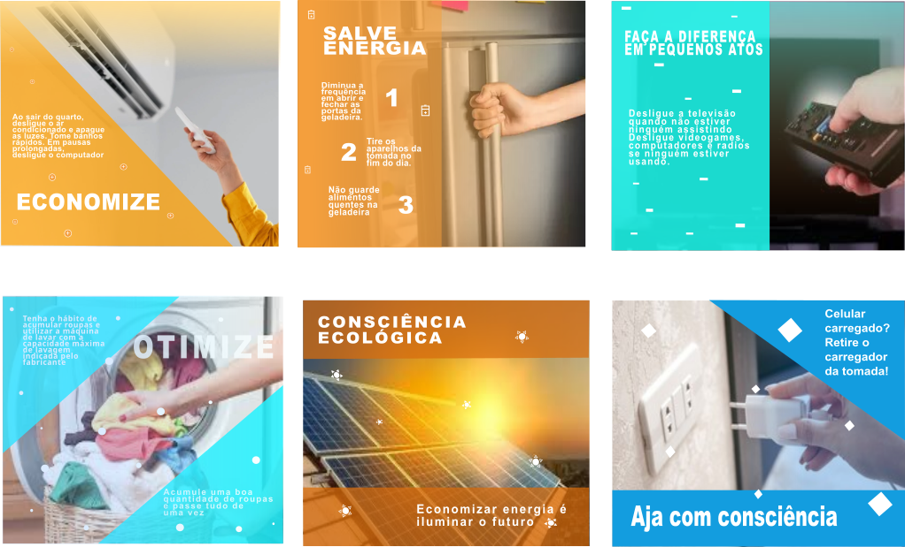

Esta etapa do projeto foi desenvolvida pela professora Fabrícia Ferreira de Souza, a qual leciona as matérias de ferramentas de desenho e de práticas de orientação para atuação profissional

Os cards foram desenvolvidos com a finalidade de conscientização, onde foi feito o uso de cenas do cotidiano para melhor transmitir a mensagem que procuramos passar
Volte a página inicial